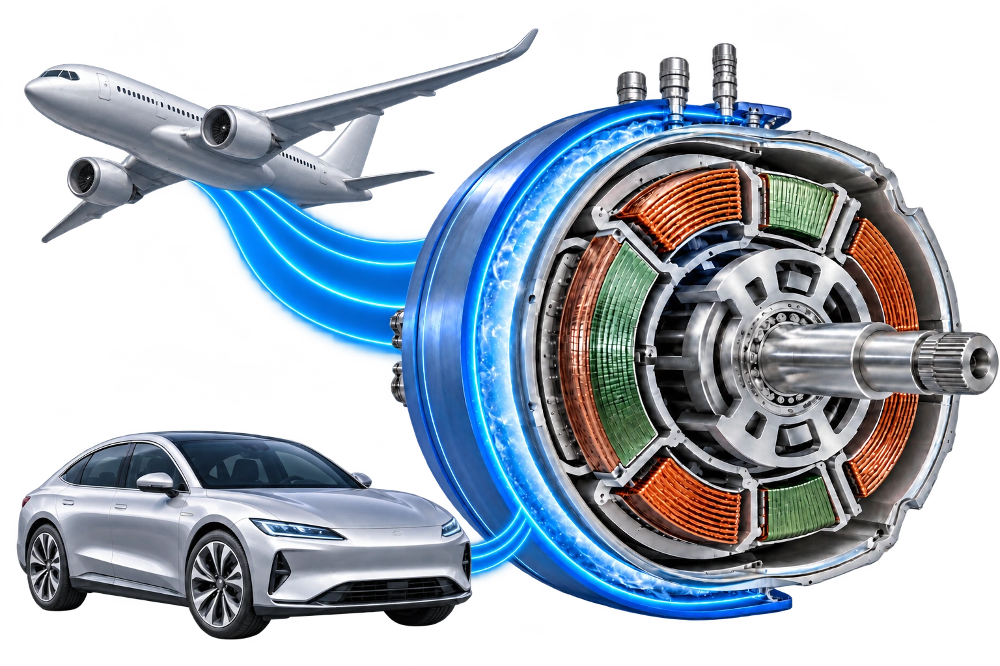
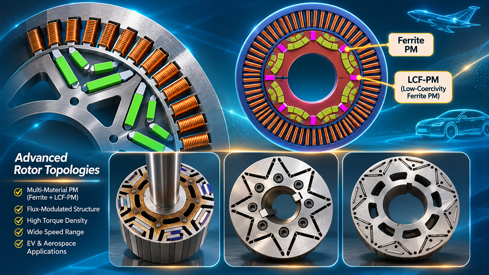
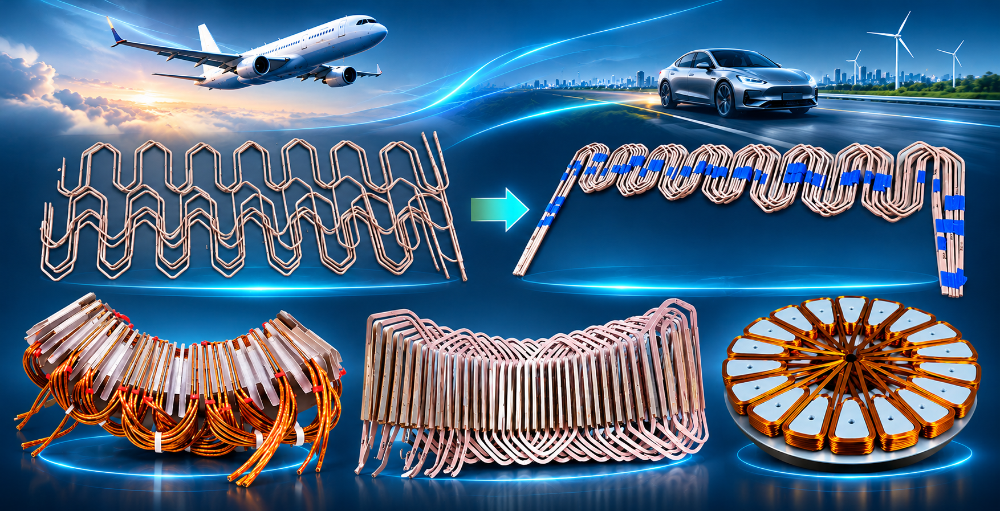
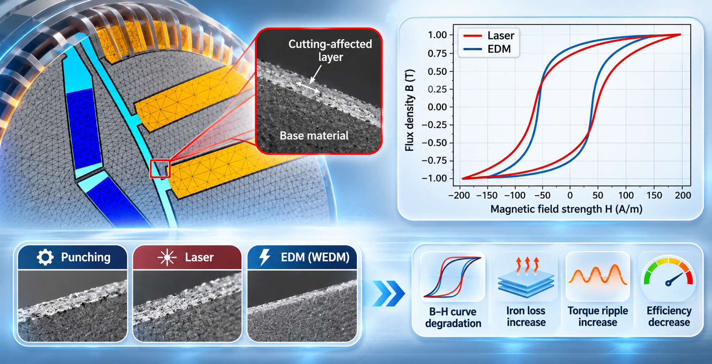

Electrical Machines forFuture Transport.
Connecting machine architecture, advanced windings and magnetic materials for electric vehicles, aircraft propulsion and robotics.

Machine architecture
Advanced Electrical Machines
New machine architectures for electric vehicles, aircraft propulsion and robot joints, connecting electromagnetic design with demanding operating requirements.
- 1 MWAircraft propulsion
- 200 kWHigh-speed generation
- 150 kWEV traction

Winding architecture
Advanced Winding Technology
Hairpin, continuous hairpin, Litz wire and edgewise coils. Studying how conductor geometry and winding layout influence AC losses, current sharing and manufacturing.
Explore winding research
Materials & manufacturing
Advanced Materials & Additive Manufacturing
Connecting electrical-steel characterisation and manufacturing effects with machine performance, while exploring the design opportunities of additive manufacturing.
Explore material research
Research collaboration
From a design question to engineering insight.
I welcome discussions on electrical machines, winding technologies, magnetic materials and collaborative research.
Get in touchAbout my research background